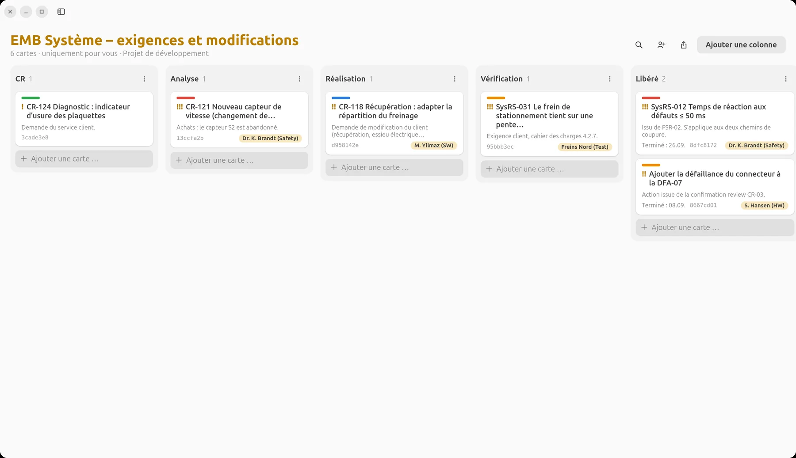
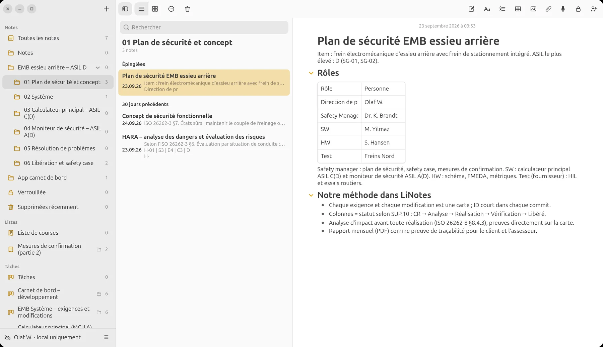
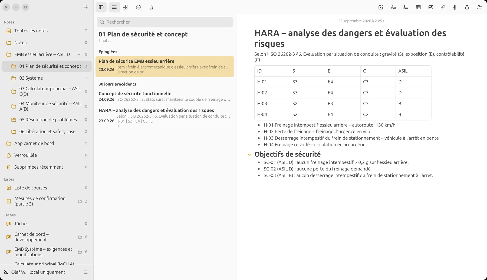
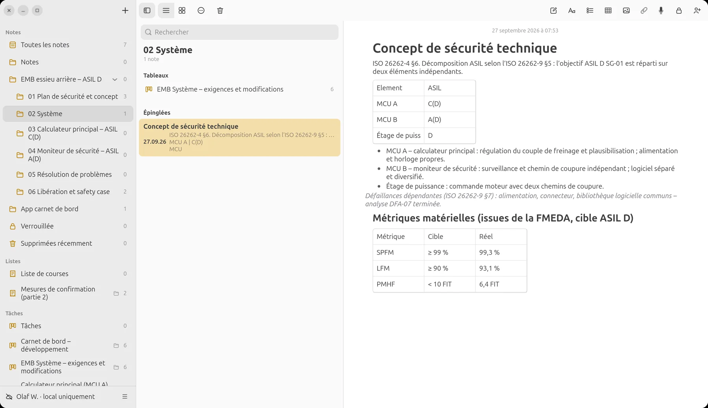
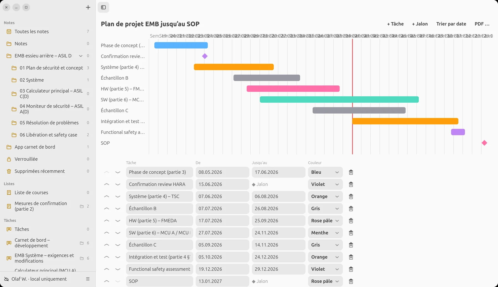
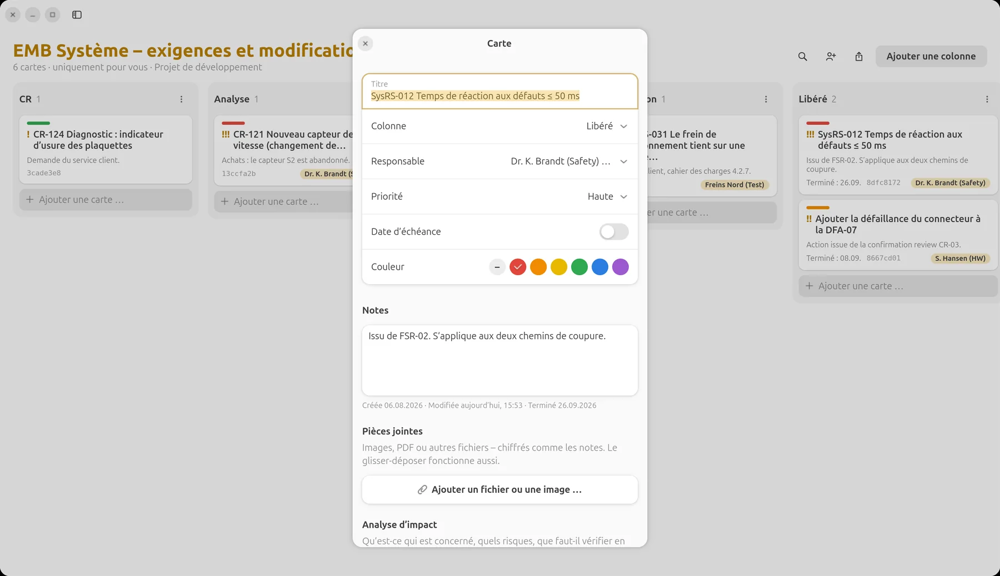
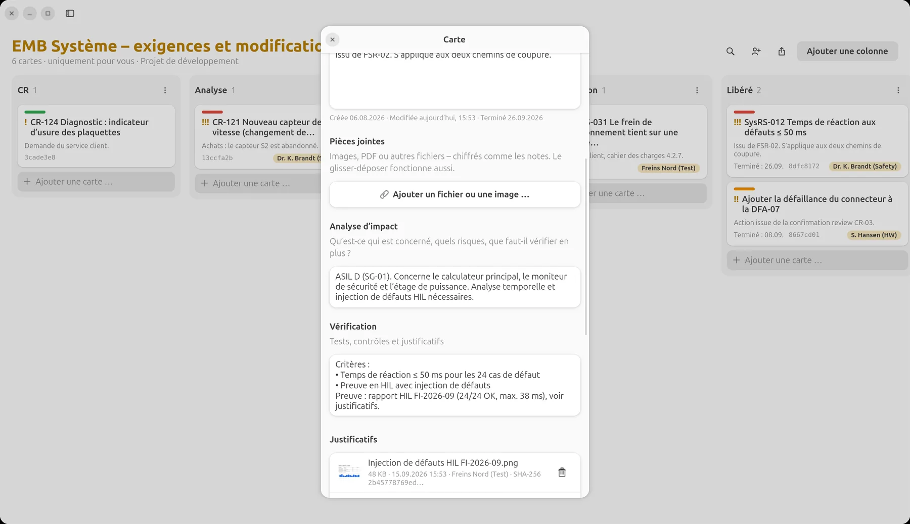
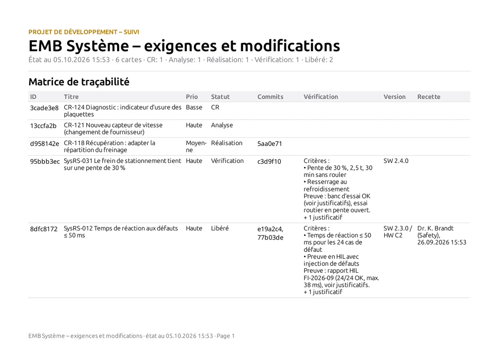
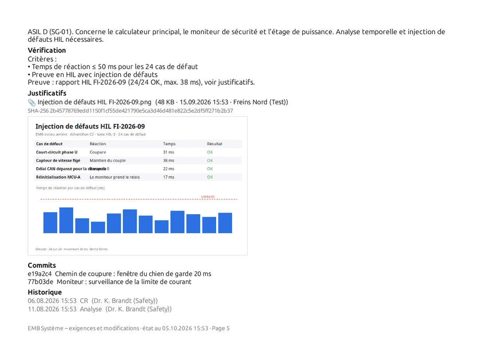
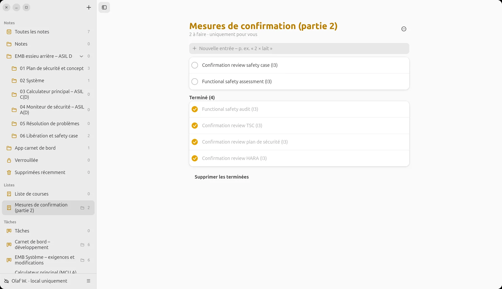

LiNotes
LiNotesUn projet ASIL D.
De la HARA à la libération.
Un frein électromécanique pour l’essieu arrière, ASIL D, réparti entre un calculateur principal ASIL C(D) et un moniteur de sécurité ASIL A(D). Voici comment mettre en place un tel projet dans LiNotes, le piloter avec votre équipe et votre fournisseur, et le mener à terme avec un reporting sans faille.

Tous les noms, exigences, chiffres et résultats sont inventés. Les images montrent la véritable app LiNotes avec ces données d’exemple.
1 · Mettre en place
La structure du projet est
le cycle de vie de sécurité.
Un dossier pour l’item, des sous-dossiers pour chaque phase et chaque élément. Notes, tableaux, plans et checklists y sont côte à côte, comme un classement de projet, mais consultable et chiffré de bout en bout.
Des dossiers par phase et par élément.
- 01 Plan de sécurité et concept : plan de sécurité, définition de l’item, HARA, concept de sécurité fonctionnelle (ISO 26262-2, -3).
- 02 Système : concept de sécurité technique et le tableau système (ISO 26262-4).
- 03 Calculateur principal, ASIL C(D) et 04 Moniteur de sécurité, ASIL A(D) : un tableau propre à chaque élément décomposé (ISO 26262-5, -6, -9).
- 05 Résolution de problèmes : rapports d’anomalies issus des tests et du terrain.
- 06 Libération et safety case : mesures de confirmation, procès-verbaux, safety case.

HARA et objectifs de sécurité.
Les dangers avec gravité, exposition et contrôlabilité sous forme de tableau, en dessous les objectifs de sécurité SG-01 à SG-03. Chaque exigence créée ensuite cite « son » objectif de sécurité. Le fil conducteur reste ainsi visible.

Décomposition ASIL :
D = C(D) + A(D).
Le concept de sécurité technique répartit SG-01 selon l’ISO 26262-9 sur deux éléments indépendants : le calculateur principal (MCU A) en ASIL C(D) et le moniteur de sécurité (MCU B) en ASIL A(D). L’analyse des défaillances dépendantes et les métriques matérielles issues de la FMEDA se trouvent juste à côté.
- Chaque élément a son propre tableau, avec sa propre équipe, son propre statut, son propre rapport.
- L’indépendance est vérifiée dans l’analyse d’impact de chaque carte.

2 · Piloter
Chaque exigence, chaque modification,
chaque anomalie : une carte.
Un clic transforme un tableau en projet de développement. Les cartes portent alors un identifiant court, leur historique de statut et les champs analyse d’impact, vérification, version et commits.
Système : exigences système (SysRS) et demandes de modification (CR) du client. Colonnes = statut selon SUP.10 ; l’acceptation dans « Libéré » est faite par le safety manager.
D’abord l’analyse d’impact
Avant qu’une carte passe en réalisation : quel objectif de sécurité, quel ASIL, quels éléments, quelle étendue de régression (ISO 26262-8 §8.4.3).
Rôles et responsabilités
Safety manager, développement, matériel, fournisseur : chaque carte a une personne responsable. Avec les @-mentions, on implique quelqu’un de façon ciblée.
Impliquer le fournisseur
Les tableaux peuvent être partagés individuellement avec des personnes vérifiées. Le banc d’essai du fournisseur voit exactement ses cartes, chiffrées de bout en bout (DIA, ISO 26262-8 §5).
Commits automatiques
Si l’identifiant de la carte figure dans le message de commit, LiNotes relie le commit à la carte : traçabilité bidirectionnelle sans travail manuel.
Historique du statut
Qui a déplacé la carte de « Analyse » à « Réalisation », et quand ? L’historique figure sur chaque carte et dans le rapport.
Version
Chaque carte indique la version dans laquelle elle est réalisée (p. ex. SW 2.3.0 / HW C2), pour la gestion de configuration et la libération.
Le plan de projet
jusqu’au SOP.
Les phases selon les parties 3 à 6, les échantillons B et C, les confirmation reviews et le functional safety assessment comme jalons. La ligne rouge, c’est aujourd’hui. Un coup d’œil montre où en est le projet.

3 · Prouver
La preuve est attachée
à l’exigence.
Pas de renvoi à un procès-verbal quelque part sur un disque : rapports de test, courbes de mesure et captures d’écran sont attachés, chiffrés, directement à la carte, avec horodatage, personne et somme de contrôle.


SysRS-012 « Temps de réaction aux défauts ≤ 50 ms » : analyse d’impact sur trois éléments, critères et le rapport HIL avec 24 cas de défaut comme preuve.
Le reporting
en un clic.
Clic droit sur un tableau → « Exporter le rapport ». Il en sort un PDF avec une matrice de traçabilité et une page de détail par carte : description, analyse d’impact, vérification, preuves avec SHA-256 et images intégrées, commits, historique et acceptation. En CSV pour un traitement ultérieur.


Au rythme voulu
Chaque mois, par tableau, au client et à l’assesseur : un PDF par élément, avec la date dans le nom du fichier.
Vérifiable
Le SHA-256 du rapport prouve quel fichier était joint comme preuve, même des années plus tard.
Acceptation visible
Qui a déplacé une carte dans « Libéré », et quand, figure dans la matrice.
4 · Clôture
Confirmer,
évaluer, libérer.
Les mesures de confirmation selon l’ISO 26262-2 (confirmation reviews, audit, assessment) sont tenues sous forme de checklist avec le degré d’indépendance. Le safety case rassemble l’argumentation et renvoie aux rapports des tableaux.
- Les procès-verbaux des revues sous forme de note, les actions comme cartes dans le tableau concerné.
- Libération pour la production en série lorsque toutes les cartes sont libérées et toutes les mesures de confirmation effectuées.
- Rapport final : les rapports PDF de tous les tableaux plus le safety case, avec les sommes de contrôle de toutes les preuves.

Positionnement
Ce que LiNotes couvre
pour l’ISO 26262.
Pour être honnête : LiNotes est un outil d’organisation, de gestion des modifications, de traçabilité et de preuves. Il ne réalise pas lui-même les analyses techniques comme la FMEDA, la FTA ou l’analyse temporelle. Il en documente et relie les résultats.
| Partie | Contenu | Degré | Dans l’exemple |
|---|---|---|---|
| Partie 2 | Gestion de la sécurité fonctionnelle | en partie | Plan de sécurité et rôles sous forme de note, mesures de confirmation sous forme de checklist, safety case sous forme de note renvoyant aux rapports. |
| Partie 3 | Phase de concept | documenté | Définition de l’item, HARA avec tableau S/E/C/ASIL, objectifs de sécurité et concept de sécurité fonctionnelle sous forme de notes. |
| Partie 4 | Développement du produit au niveau système | en partie | Concept de sécurité technique, exigences système sous forme de cartes avec vérification et preuves HIL ; phases d’intégration et de test dans le plan de projet. |
| Partie 5 | Développement du produit au niveau matériel | documenté | Métriques matérielles (SPFM, LFM, PMHF) issues de la FMEDA comme résultat ; modifications matérielles sous forme de cartes avec analyse d’impact. |
| Partie 6 | Développement du produit au niveau logiciel | en partie | Exigences logicielles par élément sous forme de cartes, rapport MC/DC comme preuve, commits reliés. L’analyse statique et la mesure de couverture viennent de vos outils. |
| Partie 7 | Production, exploitation, service | hors du champ | Possible : observation terrain sous forme de tableau de rapports d’anomalies. |
| Partie 8 §5 | Développement distribué (DIA) | couvert | Partager les tableaux de façon ciblée avec le fournisseur, responsabilités sur chaque carte, chiffré de bout en bout. |
| Partie 8 §6 | Exigences de sécurité | en partie | Identifiant unique, statut, rattachement à l’objectif de sécurité et à l’élément, traçabilité vers les commits et les preuves. Pas d’attributs formels ni de baselines comme dans un outil de gestion des exigences. |
| Partie 8 §7 | Gestion de configuration | en partie | Version sur chaque carte, commits reliés, historique de statut. Les baselines et versions elles-mêmes se trouvent dans Git ou votre système de GC. |
| Partie 8 §8 | Gestion des modifications | couvert | Workflow CR avec colonnes, analyse d’impact, décision, réalisation, vérification, acceptation avec personne et horodatage. |
| Partie 8 §9 | Vérification | couvert | Critères par carte, preuves avec SHA-256, rapport avec rapports de test intégrés. |
| Partie 8 §10 | Documentation | en partie | Notes, rapports en PDF, tout chiffré et consultable. Les notes n’ont pas d’historique de versions. Déposez en plus les documents libérés comme preuve PDF avec somme de contrôle. |
| Partie 8 §11 | Confiance dans l’utilisation des outils logiciels | à la charge de l’utilisateur | LiNotes n’est pas un outil qualifié. La classification de l’outil (TI/TD → TCL) et, le cas échéant, sa qualification vous incombent. |
| Partie 9 | Analyses orientées ASIL | documenté | Décomposition ASIL D → C(D) + A(D) et analyse des défaillances dépendantes dans le concept de sécurité technique, un tableau par élément. |
Positionnement
Et pour
Automotive SPICE.
Dénominations selon Automotive SPICE 3.1 ; dans la version 4.0, les processus sont découpés de façon similaire. Un assessment évalue votre façon de travailler. LiNotes en fournit les produits de travail et les preuves.
| Processus | Contenu | Degré | Dans l’exemple |
|---|---|---|---|
| SUP.10 | Gestion des modifications | couvert | Demandes de modification sous forme de cartes, statut par colonnes, analyse d’impact, décision, suivi jusqu’à l’acceptation, rapport. |
| SUP.9 | Gestion de la résolution de problèmes | couvert | Tableau « Rapports d’anomalies » : signalement, analyse, correction, vérification, clôture, avec cause et preuve. |
| MAN.3 | Gestion de projet | couvert | Plan de projet avec phases et jalons, responsabilités, priorités et échéances sur les cartes, avancement par colonne. |
| ACQ.4 | Suivi des fournisseurs | en partie | Tableaux partagés avec le fournisseur, preuves de test fournies directement par lui ; contrats et évaluations en dehors. |
| SUP.8 | Gestion de configuration | en partie | Versions et commits sur les cartes ; baselines dans le système de gestion de versions. |
| SUP.1 | Assurance qualité | en partie | Checklists, procès-verbaux de revue, acceptation avec personne et horodatage ; escalade via des cartes. |
| SUP.4 | Revues conjointes | en partie | Procès-verbaux sous forme de note, actions sous forme de cartes avec responsable et preuve. |
| SYS.2–SYS.5 | Des exigences système au test système | en partie | Traçabilité bidirectionnelle exigence ↔ réalisation (commits) ↔ test (preuves) par carte ; architecture et spécification de test dans vos outils. |
| SWE.1–SWE.6 | Des exigences logicielles au test logiciel | en partie | Comme ci-dessus au niveau des éléments (MCU A, MCU B), avec rapports MC/DC et de tests unitaires comme preuves. |
| SUP.7 | Documentation | en partie | Classement du projet en dossiers, rapports en PDF ; sans workflow de libération de documents. |
Cet exemple est une orientation, pas un conseil normatif ou juridique. Qu’une démarche réussisse un assessment dépend de votre processus, de vos preuves et de l’évaluation par des assesseurs indépendants.
Essayez vous-même.
LiNotes est gratuit, open source et fonctionne sur votre propre serveur, et aussi en local, sans serveur.